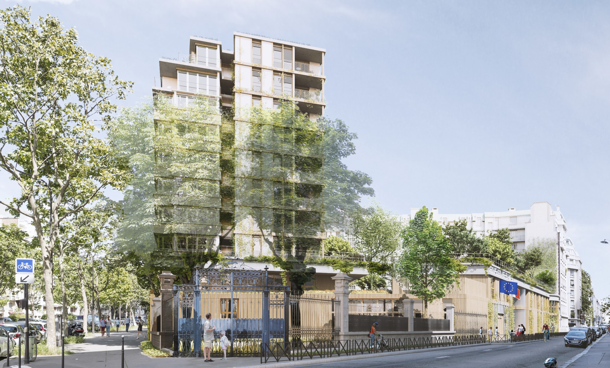

Survolez l'image et agrandissez/réduisez la vue à l'aide de la molette.
Budget: 18 795 316 € HT
Surface: Surfaces plancher Ensemble immobilier d'environ 10 000 m2 : 2 588 m2 (école polyvalente) + 445 m2 (crèche associatives) + 4 304 m2 (logements familiaux, caves et parking) + 670 m2 (pension de famille) + 82 m2 (commerce); Superficie totale de l’ilot 3 940 m2; Projection au sol des constructions 8 920 m2; Surface espaces extérieurs 2 786 m2 (1 344 m2 cour et jardin + 1 442 m2 terrasse jardin)
Date début: 2017
Date fin: -
Maîtrise d'ouvrage: Paris Habitat OPH
Co-traitant(s): bureau des paysages
Description:
À partir du site actuel est composé un paysage "étagé" où s’élèvent trois bâtiments alignés sur le boulevard Exelmans ; les deux premiers étant les deux faces d’un même immeuble, côté boulevard et côté jardin. Ces immeubles résidentiels se présentent en tenue de ville, régulés et lignés côté boulevard, tramés côté jardin. Chacun revisite des thèmes différents, inspirés par les architectures proches.
Une façade striée, en lattis de bois, se glisse sous le niveau de la terrasse-jardin. Reprenant les gabarits construits
de l’école existante, elle réinterprète le rythme de la clôture du jardin de la pointe.
Les nouveaux bâtiments ont un air de famille avec leurs alentours. Ils mettent à profit l’esprit des lieux pour construire une identité singulière à partir d’un environnement déjà constitué. Les nouvelles constructions sont urbaines, non seulement parce qu’elles sont en ville, mais aussi par leur manière attentive d’entrer en conversation avec leurs voisines.
Sur la terrasse-jardin est planté un jardin parisien, un jardin des quatre saisons. Les arbustes sont rangés en bandes parallèles de longueur irrégulière, de petits arbres en cépées, ou en forme libre, sont disposés d’une manière aléatoire.
À chaque saison un motif différent apparaît ; ainsi au fil du temps se dessine un paysage changeant.
{kind=link}
{kind=link}
{kind=link}